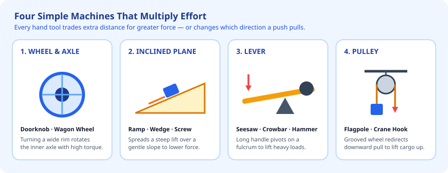
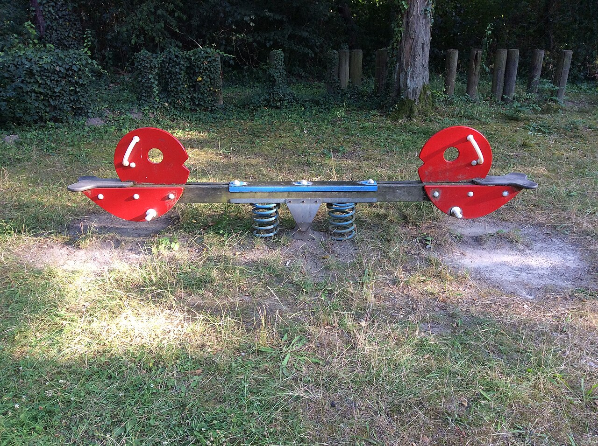
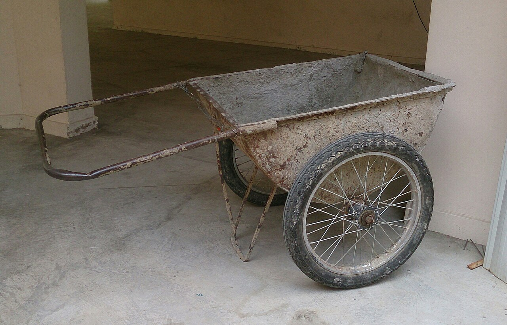

Tools & Machines Sort
Every tool in a toolbox has a job it does best, and every machine — even a simple one like a doorknob or a slide — is really one of a small handful of clever tricks. Let's match tools to their jobs, then go find those same tricks hiding all around your home and playground.
"By wisdom a house is built, and by understanding it is established; by knowledge the rooms are filled with all precious and pleasant riches."
— Proverbs 24:3–4
The Right Tool for the Right Job
A good builder doesn't grab just any tool — they pick the one made for the job in front of them. Using the wrong tool is slow, and can even be unsafe. Using the right tool makes hard jobs feel easy.
Hammer
Strikes a nail with force to drive it into wood.
Screwdriver
Turns a screw round and round until it's snug.
Wrench
Grips a bolt tightly, then twists it loose or tight.
Saw
Cuts a piece of wood down to the size you need.
Game 1: Match the Tool to Its Job
How to play: Tap a tool below, then tap the job it's best at. Watch for the green flash — that means you got it right!
Four Tricks Hiding in Every Machine
Believe it or not, almost every machine — from a can opener to a rocket — is built from a small set of simple tricks engineers call simple machines. Once you can spot them, you'll see them everywhere.
Wheel & Axle
A round part that spins around a fixed center point.
Ramp
A slanted surface that trades distance for less effort.
Lever
A bar that pivots on a point to lift or pry something.
Pulley
A wheel with a rope that changes which way you pull.



Game 2: Spot the Simple Machine
How to play: Each everyday object below is secretly one of the four simple machines. Sort it into the machine it matches.
Words to Know
Tool
Something you hold and use to do a job — like a hammer or a screwdriver.
Machine
Something built to make a job easier by changing force or direction.
Simple Machine
One of a small set of basic building blocks — like a wheel, ramp, lever, or pulley — that bigger machines are built from.
Lever
A bar that tips around a fixed point to lift or pry something heavy.
Ramp
A slanted path that makes it easier to move something up high.
Engineer
Someone who picks the right tools and machines to solve a real problem.
Quick Check
Read each question aloud together, then pick the best answer.
1. Which tool is best for turning a screw?
2. A playground slide is an example of which simple machine?
3. A seesaw is an example of which simple machine?
4. Why does a good builder pick the right tool for the job?
5. A doorknob works because of which simple machine?
Wonder and Reflection: Built with Wisdom
Look around any room and you'll find wheels, ramps, levers, and pulleys quietly doing their jobs — in door hinges, light switches, staircases, and window blinds. None of it happened by accident. Someone noticed a problem, picked the right tool and the right simple machine, and built something that works.
The Bible tells us that wisdom and understanding are what it takes to build something good — the same care a builder uses to choose a hammer over a screwdriver, or a ramp over a ladder. When you sort tools by their job, you're practicing that same kind of careful, wise thinking.
"Commit your work to the Lord, and your plans will be established."
— Proverbs 16:3
Summary: What We Learned
- Every tool has a job it's best at — hammers strike, screwdrivers turn, wrenches grip and twist.
- A simple machine is a basic building block that bigger machines are made from.
- There are four simple machines to spot everywhere: wheel & axle, ramp, lever, and pulley.
- Picking the right tool or machine makes a hard job easier and safer.
- Once you can spot simple machines, you'll notice them everywhere — that's the first step toward engineering.